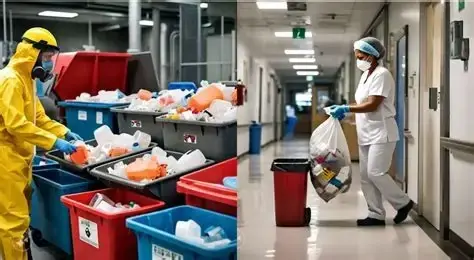
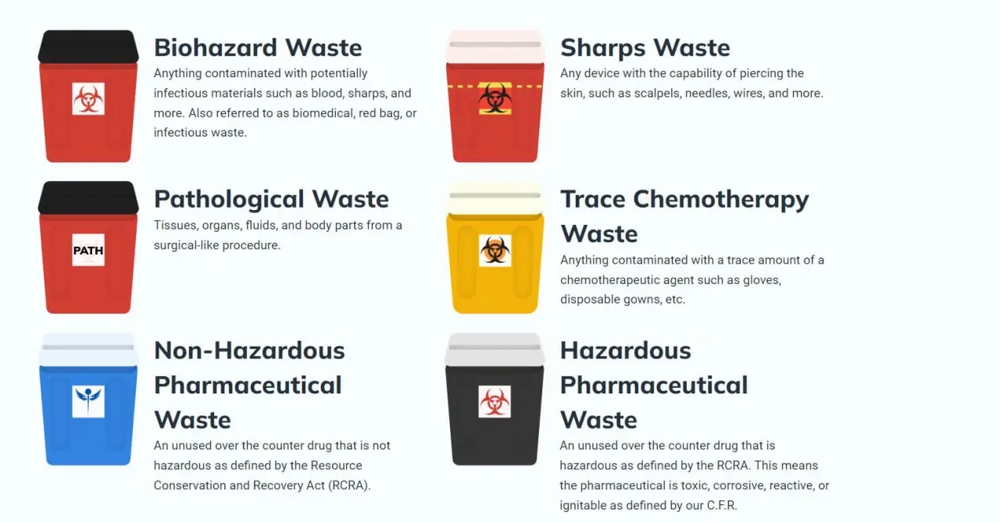
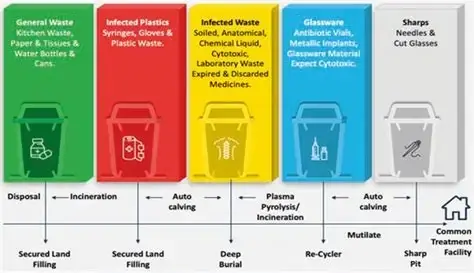
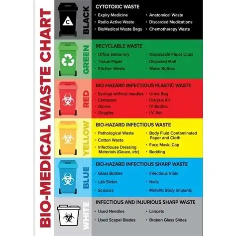

Hindi
Hindi French
French Dutch
Dutch Português
Português Malagasy
Malagasy Italiano
Italiano

Biomedical Waste Management: The Complete Guide for Hospitals & Healthcare Facilities
By CRENEU® Team · Healthcare & Compliance
Healthcare institutions play a vital role in protecting public health. However, every hospital, clinic, diagnostic laboratory, blood bank, pharmaceutical company, veterinary hospital, and research laboratory also generates biomedical waste that requires safe handling and disposal. Without proper biomedical waste management, infectious waste can spread diseases, contaminate the environment, and endanger healthcare workers.
Biomedical waste management is much more than simply disposing of waste. It is a structured process involving segregation, collection, transportation, treatment, and final disposal — while ensuring compliance with national regulations and international best practices.
At CRENEU®, we manufacture and supply premium-quality biomedical waste management products designed to help healthcare facilities safely manage medical waste while meeting industry standards.

What is Biomedical Waste?
Biomedical waste refers to any waste generated during the diagnosis, treatment, immunization, medical research, or production of biological materials involving humans or animals. Unlike regular municipal waste, it often contains infectious materials, sharp objects, contaminated plastics, pathological waste, pharmaceuticals, chemicals, and laboratory specimens that can pose significant health and environmental risks if not managed properly.
Common examples include:
- Used syringes
- Needles
- IV tubing
- Blood bags
- Surgical gloves
- Cotton swabs
- Bandages
- Human tissue
- Laboratory cultures
- PPE kits
- Disposable masks
- Catheters
- Scalpel blades
- Vaccination waste
- Pharmaceutical waste

Why Biomedical Waste Management is Critical
Improper handling of medical waste can have devastating consequences. Contaminated waste can transmit infectious diseases such as Hepatitis B, Hepatitis C, HIV, and bacterial infections. Needle-stick injuries among healthcare workers are often linked to poorly managed sharps waste.
In addition to health risks, improper disposal contributes to soil contamination, groundwater pollution, air pollution through uncontrolled burning, plastic pollution, public health hazards, occupational injuries, and regulatory penalties.
Benefits of Proper Biomedical Waste Management
1. Protects Healthcare Workers
Doctors, nurses, laboratory technicians, housekeeping staff, and waste handlers are exposed to biomedical waste every day. Using proper waste segregation systems and durable containers significantly reduces exposure to infectious materials.
2. Prevents Hospital-Acquired Infections
Cross-contamination can occur when infectious waste is mixed with general waste. Proper segregation minimizes infection risks and supports stronger infection prevention and control (IPC) practices.
3. Environmental Protection
Safe collection, transportation, treatment, and disposal reduce pollution and ensure hazardous materials do not enter water bodies or landfills.
4. Regulatory Compliance
Using standardized waste bins, color-coded bags, and sharps containers helps organizations remain compliant during inspections and audits.
5. Improved Operational Efficiency
Well-designed systems reduce handling time, simplify waste collection, and improve workflow within healthcare facilities.
Categories of Biomedical Waste
Biomedical waste is generally classified into several categories — infectious waste, pathological waste, sharps waste, pharmaceutical waste, plastic waste, and chemical waste. Sharps such as needles, scalpels, surgical blades, lancets, and broken glass are among the most hazardous and require puncture-resistant containers to prevent injuries.
The Biomedical Waste Management Process
A successful program follows a structured lifecycle: waste generation → segregation at the point of generation using color-coded bins → collection via dedicated trolleys → secure storage for the permitted duration → authorized transportation to treatment facilities.

Biomedical Waste Color Coding
One of the most important aspects of biomedical waste management is proper segregation using color-coded containers. Segregating waste at the point of generation reduces infection risks, lowers disposal costs, and ensures compliance. Healthcare professionals should be trained to dispose of waste into the correct containers immediately after use.

Essential Products for Every Facility
Selecting the right products is just as important as following correct procedures. Healthcare facilities should invest in:
- Color-coded biomedical waste bins
- Foot-operated waste bins
- Biomedical waste bags
- Puncture-resistant sharps containers
- Needle destroyers
- Waste collection trolleys
- Spill management kits
- Biohazard labels and stickers
- PPE kits
- Waste storage containers
Common Mistakes to Avoid
- Mixing general and biomedical waste — can make an entire batch hazardous.
- Overfilled sharps containers — increase the risk of needle-stick injuries.
- Incorrect labeling — causes confusion during collection and disposal.
- Lack of staff training — even the best products fail without proper segregation.
- Low-quality containers — may crack, leak, or fail during transportation.
Why Choose CRENEU®?
At CRENEU®, we understand the critical role safe biomedical waste management plays in protecting healthcare workers, patients, and the environment. Our product range includes biomedical waste bins, color-coded bins, waste bags, sharps containers, needle destroyers, collection trolleys, foot-operated bins, biohazard labels, spill management kits, and infection control accessories — all built with premium, durable, easy-to-clean, and compliant designs.
Conclusion
Effective biomedical waste management is not just a regulatory requirement — it is a commitment to protecting lives, maintaining public health, and preserving the environment. By implementing proper segregation practices and investing in high-quality products, healthcare facilities can significantly reduce infection risks, improve efficiency, and ensure compliance with healthcare standards.
Looking for reliable biomedical waste products?
Explore our full range of bins, sharps containers, bags and infection-control accessories.